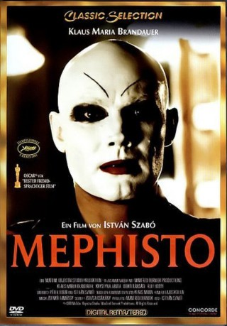

#7676 Mephisto
Auszeichnungen: 1 Oscars gewonnen
 
 IMDB-Wertung: 7.9 / 10
IMDB-Wertung: 7.9 / 10  Tomatometer: 79
Tomatometer: 79  Metascore: 0
Metascore: 0 
Der Schauspieler Hendrik Höfgen will nur eins: seine Traumrolle spielen, den "Mephisto" aus Goethes Faust - und zwar in der Hauptstadt. Die Heirat mit der Professorentochter Barbara ebnet Höfgen den Weg in die Berliner Gesellschaft der 20er Jahre. Als die Nazis an die Macht kommen und Barbara emigrieren muss, zögert der ehrgeizige Opportunist nicht lange: Er entscheidet sich gegen die Moral und für den Erfolg. Unter dem Protegé Görings steigt er zum Intendanten des Staatstheaters auf. Doch der Pakt mit dem Teufel hat seinen Preis ...
Jahr: 1981
Dauer: 144 Minuten
FSK: 12
Land: West-Deutschland Studio: Concorde Home EntertainmentTonspuren:
Untertitel: Deutsch,
Auflösung: 1080p (1792x1080) Größe: 10065 MB
Genre: Drama
Regisseur: István Szabó
Drehbuch: Péter Dobai
Soundtrack:
Darsteller:
 Klaus Maria Brandauer als Hendrik Höfgen
Klaus Maria Brandauer als Hendrik Höfgen Krystyna Janda als Barbara Bruckner
Krystyna Janda als Barbara Bruckner- György Cserhalmi als Hans Miklas
- Hédi Temessy als Egy nagybankos neje
- János Xantus als
- István Szabó als Theatre party attendant , uncredited
- Ildikó Bánsági als Nicoletta von Niebuhr
 Rolf Hoppe als Tábornagy
Rolf Hoppe als Tábornagy- Péter Andorai als Otto Ulrichs
- Karin Boyd als Juliette Martens
- Christine Harbort als Lotte Lindenthal
- Tamás Major als Oskar Kroge, színigazgató
- Ildikó Kishonti als Dora Martin, primadonna
- Mária Bisztrai als Motzné, tragika
- Sándor Lukács als Rolf Bonetti, bonviván
- Ágnes Bánfalvy als Angelika Siebert, naiva
- Judit Hernádi als Rachel Mohrenwitz, drámai szende
- Vilmos Kun als Ügyelõ
- Ida Versényi als Súgó
- István Komlós als Kis Böck, Öltöztetõ
- Sári Gencsy als Bella Hilfgrin
- Zdzislaw Mrozewski als Bruckner, tanácsos
- Stanislava Strobachová als Tábornokné
- Károly Ujlaky als Sebastian
- György Bánffy als Faust
- József Csör als Joachim, jellemszínész
- Christian Grashof als Cesar von Muck
- Teri Tordai als Laura, szobrásznõ
- David Robinson als Davidson, kritikus
- Géza Kovács als Müller, kritikus
- Hans Ulrich Laufer als Radig, szerkesztõ
- Margrid Hellberg als Fiatal énekesnõ
- Kerstin Hellberg als Fiatal énekesnõ
- Irén Bordán als Filmszínésznõ
- Oszkár Gáti als Filmszínész
- Tamás Balikó als A Tábornagy szárnysegéde
- Ödön Rubold als A Tábornagy szárnysegéde
- István Palotai als A Tábornagy szárnysegéde
- Bertalan Papp als A Tábornagy szárnysegéde
- Mónika Bognár als
- Béla Bolykovszki als
- Erzsébet Czeglédi als
- János Dömölky als
- Mária Fekete als
- Katalin Fráter als
- Tamás Fésüs als
- Oszkárné Gombik als
- Martin Hellberg als Professor
- Magda Kalmár als Soprano singer , singing voice
- István Karsai als
Datei: X:\1981\Mephisto (1981, FSK12, 1792x1080).mkv seit 30.11.2017
Festplatte: HD 1980-1986
 Es gibt insgesamt 33 Filme in der Gruppe '1981'
Es gibt insgesamt 33 Filme in der Gruppe '1981'